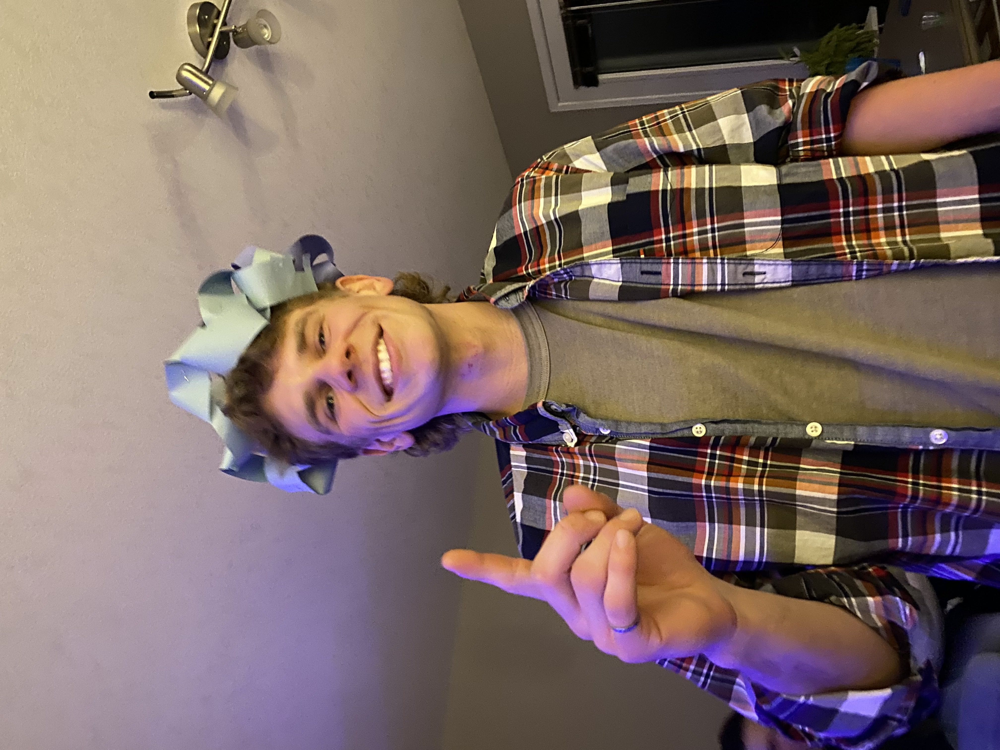

A LITTLE ABOUT ME LUKAS BENA
Staying Curious
Continuing to Learn.
I enjoy working through a problem, and learning how things fit together. That might mean restoring a car, building something useful to me, or getting outside and clearing my head.
This site is a home for the projects, lessons, and ideas I want to remember—and the ones I’m still figuring out.
This photo is taken right after I was crowned the winner of the best potato dish at a event! I made a Czech traditional Bramborový salát (potato salad) which is made every year on Christmas. It is very good!
See what I’m working on